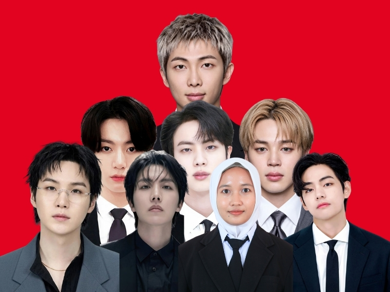

Cerita Usaha
Tentang Soto Tauto Lani
Soto Tauto Lani adalah usaha UMKM yang bergerak di bidang kuliner, khususnya menjual soto khas Pekalongan. Kami berkomitmen untuk menyajikan hidangan yang lezat dan bermakna, dengan menggunakan bahan-bahan berkualitas tinggi dan teknik memasak tradisional.


Nilai yang Kami Bawa
- Menyediakan soto khas Pekalongan yang autentik dan lezat.
- Mendukung pertumbuhan UMKM lokal melalui inovasi kuliner.
- Menciptakan pengalaman bersantap yang menyenangkan bagi pelanggan.
Tim Kami
